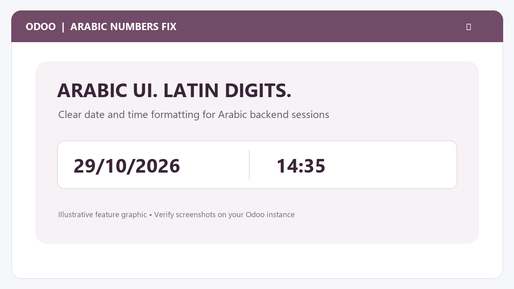
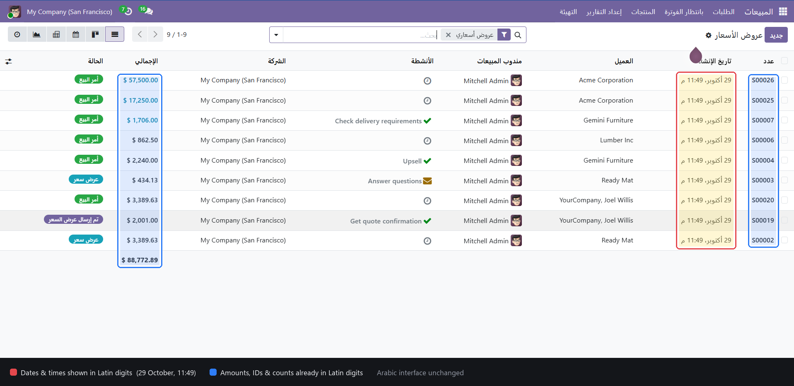
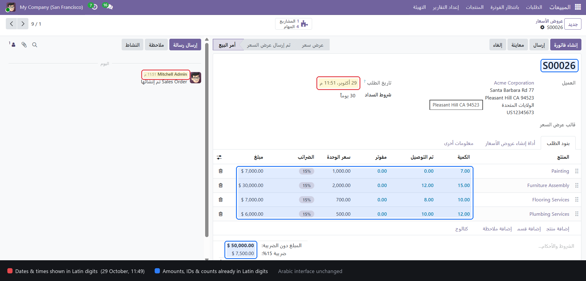
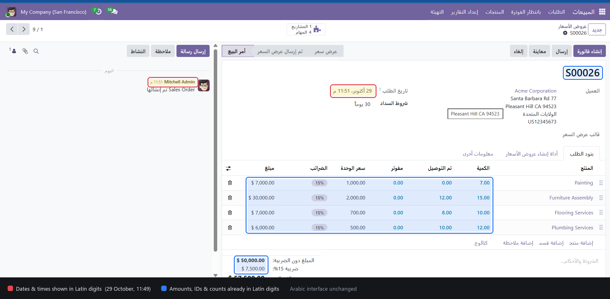
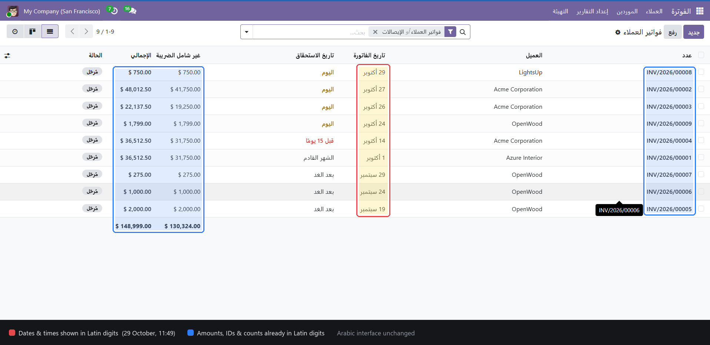
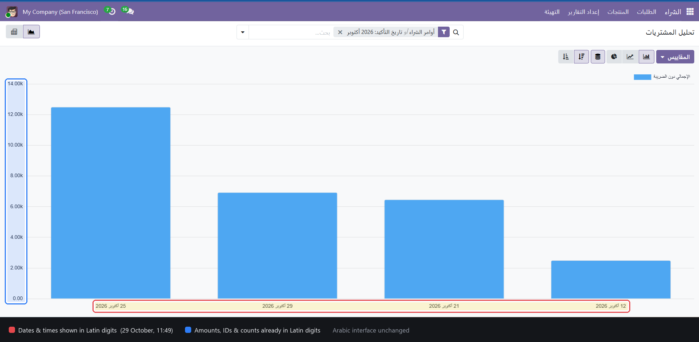
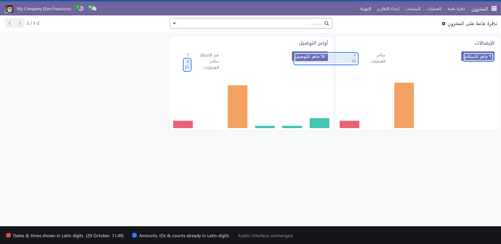
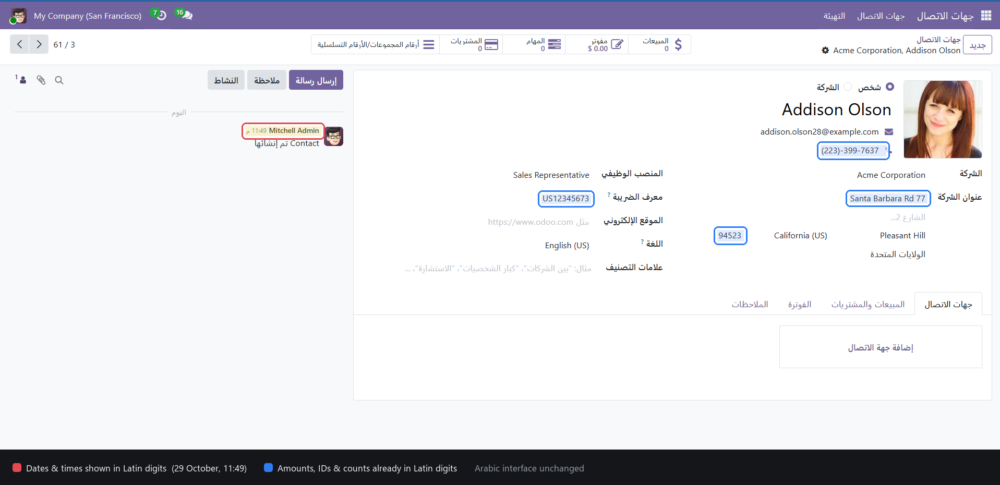
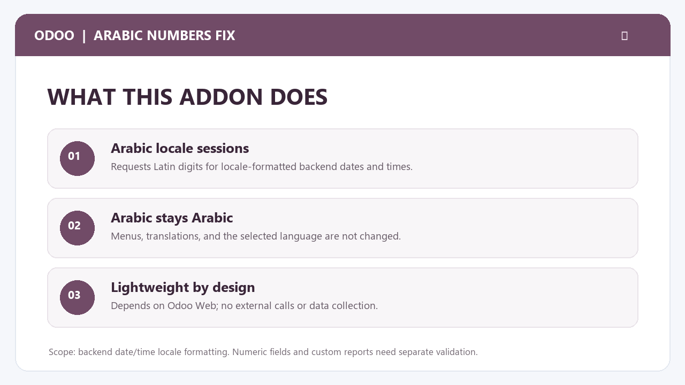

Prefer familiar Latin digits such as 29/10/2026 and 14:35 while keeping Odoo in Arabic? Arabic Numbers Fix requests Latin digits for locale-formatted dates and times in Arabic backend sessions. Arabic menus and translations remain Arabic, while other language sessions keep their normal formatting.

Captured from a running Odoo backend with the Arabic language active. Red boxes mark dates and times, blue boxes mark amounts, IDs and counts.








Scope: This addon targets locale-formatted backend dates and times. It does not claim to rewrite every numeric field, arbitrary text, PDF report, export, website, or custom module. Validate those separately if your workflow formats them through another component. It does not change stored data, language, translations, or number separators.
Compatibility: This package is for Odoo 18.0. Install it on a server with custom addons enabled. It is not compatible with Odoo Online (SaaS).
Images: The cover and feature graphics are illustrative artwork, not screenshots. The screenshots above are captured from a running Odoo backend with the Arabic language active.